오컬트·공포·괴담 웹툰 추천 TOP 30
오컬트, 오컬트판타지, 공포, 괴담, 뱀파이어 같은 태그가 붙은 작품을 모았어요. 네이버웹툰·카카오웹툰·레진코믹스에서 조건에 맞는 작품 55개 중 인기 순으로 30개를 골랐어요. 인기 TOP 3: 괴력 난신, 샤MONEY즘, 귀촌리
2026-10-09 기준 · 성인 작품 제외
내 취향으로 더 좁혀서 추천받기 →-
1
 네이버웹툰
네이버웹툰괴력 난신
살인에서 삶의 즐거움을 느끼는 '겸살귀', 정(正). 대 연목검장의 셋째공자 목경운과 똑같이 생긴 얼굴을 가졌는데... "나의 대역이 되어라. 그러면 옥에서 나갈 수 있게 해 주마." "그 기회. 제게 주시겠습니까?" '촤악-!!!' 셋째공자를 죽여버린다. 그리고 본인이 '진짜'가 되…
오컬트레드아이스 스튜디오천마액션세계관네이버웹툰에서 보기 → -
2네이버웹툰
샤MONEY즘
“진짜 일류 무당은 여의도에서 논다.” 주가의 오르내림을 예측하는 것만으로 수십, 수백 억을 벌 수 있는 여의도의 투자사들은 신통력이 있는 무당들을 고용했고, 그것은 여의도를 일류 무당들의 무대로 만들었다. 가난한 소년이었던 천지승은 그런 여의도에 살굿으로 주가를 내리는 무당으로 고용…
오컬트판타지주식자본주의인생역전네이버웹툰에서 보기 → -
3
 네이버웹툰
네이버웹툰귀촌리
평범한 시골 마을 '귀촌리'를 찾은 '허무명'. 그는 돌아가신 할머니의 빈 집에 조용히 숨어든다. 그런데 집이 이상하리만큼 깔끔하다. 할머니가 돌아가신 건 3년 전인데? 어쩐지 마을 사람들은 이방인 무명의 방문을 달가워 하는 것 같지 않다. 아니, 실은 경계하는 것 같다. 그리고 그…
오컬트괴담고자극스릴러자극적인시리어스네이버웹툰에서 보기 → -
4
 네이버웹툰
네이버웹툰미래의 골동품 가게
남해의 먼 섬에 살고 있는 소녀, '미래'. 미래의 부모님이 바다에서 돌아오지 못한 그날부터, 모든 것들이 변하기 시작했다. 저주를 풀기 위한 단 한 가지의 방법. 소중한 것들을 지키기 위한 기묘한 소녀의 퇴마가 시작된다.
오컬트오컬트판타지괴담시리어스현대네이버웹툰에서 보기 → -
5

-
6
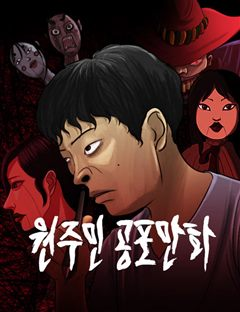
네이버웹툰원주민 공포만화
끝날 때까지 끝난 것이 아니다! 마지막까지 방심할 수 없는 다양한 에피소드. 당신의 상상을 뛰어넘는 본격 반전 공포 스릴러가 온다!
오컬트오컬트판타지괴담병맛개그네이버웹툰에서 보기 → -
7
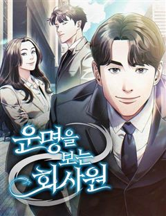
네이버웹툰운명을 보는 회사원
무당이 되어 세상을 어지럽힐 팔자를 타고난 아이. 욕심을 버리고 신을 받지 않기 위해 평범한 회사원이 되려 한다. 관상과 사주로 운명을 꿰뚫어 보는 최영훈. 과연 평범한 회사원이 될 수 있을까?
오컬트현대판타지현대오피스이능력네이버웹툰에서 보기 → -
8
 네이버웹툰
네이버웹툰염라강림
지옥이 망했다. 피가 흘러야 할 황천에는 맑은 물이 흐르고 망자들을 끓이던 솥은 차갑게 식은지 오래다. 은퇴한 염라대왕은 자신의 행복을 위해 윤회의 길을 택하고자 하지만, 혼란스러워진 지옥과 사라진 자신의 후임 털보로 인해 윤회의 길을 걸을 수 없게 된다. 인간 세상의 신이 되기 위하…
오컬트동양신화액션지금추천작네이버웹툰에서 보기 → -
9
 네이버웹툰
네이버웹툰사람의 탈
탈은 예술, 춤은 무술! 천대받는 탈춤광대 ‘봉산’은 스승이 남긴 지도를 따라 왕이 되려는 괴물 호랑이 ‘사풍흑호’를 막기 위해 전설 속의 '사람의 탈'을 찾아 모험을 떠나게 되는데 …
오컬트동양소년물모험크리처네이버웹툰에서 보기 → -
10
 네이버웹툰
네이버웹툰클래스메이트
"내가 친구가 되어줄게." 왕따 소녀 주은하에게 찾아온, 섬뜩한 귀신 소년 이해수. 위험한 우정을 받아들인 순간 은하 주위에 예기치 못한 사건들이 벌어지는데... 정체불명의 친구가 내민 이 손은 과연 구원일까, 아니면 저주일까?
오컬트공포로맨스릴러미스터리집착물네이버웹툰에서 보기 → -
11네이버웹툰
달로 만든 아이
어린 시절부터 남들이 보지 못하는 존재들을 볼 수 있던 '박하'. 평생을 외롭게 살아온 박하는 18살이 되던 해, 처음으로 자신과 같은 것을 볼 수 있는 '진도'와 그의 친구들을 만나게 된다. 어느 날, 진도를 통해 박하가 과거에 영물들을 군림했던 '달아이'라는 사실이 밝혀지게 되고…
오컬트오컬트판타지괴담자극적인이능력네이버웹툰에서 보기 → -
12
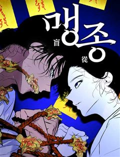
네이버웹툰맹종
만신인 할머니가 봉인해둔 뱀신, 진을 해방시킨 어린 화림은 진에게 몸을 빼앗기고, 화림을 살리기 위해 할머니는 자신의 목숨을 내놓는다. 세월이 흘러 고등학생이 된 화림은 아직까지도 자신을 끊임없이 찾고 있는 진을 피해 살고 있다. 그러던 어느 날, 같은 학교에 다니던 봉길이 진에게 몸…
오컬트오컬트판타지공포혐관드라마네이버웹툰에서 보기 → -
13
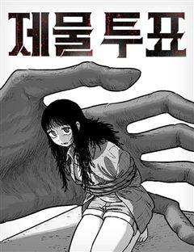
네이버웹툰제물 투표
한 번 들어가면 다시는 나올 수 없는 정체불명의 마을에 갇혀버렸다. 그곳에선 사람들이 이틀에 한 번씩 악마에게 바칠 사람을 뽑는 ‘제물 투표’를 한다. 악마들은 기차를 타고 와서 제물을 아그작아그작 씹어 먹는다. 비밀 가득한 이곳에서 탈출할 방도가 도저히 없어 보인다. 오늘 밤, 뽑히…
공포비쥬얼쇼크흑백스릴러서바이벌네이버웹툰에서 보기 → -
14
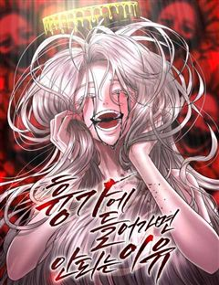
네이버웹툰흉가에 들어가면 안되는 이유
밝은 세상은 어떤 모습일까? '이현'의 세상은 흉측한 귀신과 영혼이 남기고 간 검은 덩어리로 가득하다. 평범한 삶을 살기위해 애써 그것들을 모른척하던 현의 앞에 흉가만 찾아다니는 이상한놈이 나타나는데... 위험천만한 그곳에서 우리는 무사히 빠져나갈수 있을까?
오컬트공포학원물다크판타지네이버웹툰에서 보기 → -
15
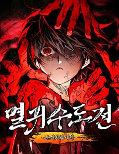
네이버웹툰멸귀수도전
"내 복수는 요귀를 절멸시켜야 끝나는 거야." 부모를 죽인 요귀를 잔혹하게 효수한 이후, 마을에서 괴물이라고 손가락질 받던 소년 '이세'. 삶에 더 이상 미련이 없던 '이세'는 도깨비이자 요귀사냥꾼인 '몽련'을 만나 세상에서 요귀를 절멸시키겠다는 목표를 가지게 된다. 그렇게 시작된 몽…
오컬트판타지레드아이스 스튜디오선협동양소년물네이버웹툰에서 보기 → -
16
 네이버웹툰
네이버웹툰재난은 늘 곁에 있다
하루 아침에 10년의 세월이 사라져버린 여자 윤다미, 그 모든 게 신이라는 남자와 엮이면서 시작되었다. 하지만 신은 본인과는 무관한 일이라며 다미를 무시한다. 그러던 중 다미의 집안에 오랫동안 찾아 헤매던 ‘물건’의 존재를 알게 되면서 다미와의 관계에 변화를 주기 시작한다. 하지만 이…
오컬트현대동양신화혐관네이버웹툰에서 보기 → -
17
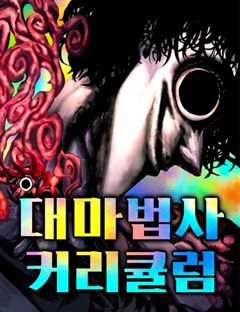
네이버웹툰대마법사 커리큘럼
착하고 의롭지만 조금? 무섭게 생긴 마법사 유진, 스승의 딸인 아인을 제자로 거둬 대마법사로 키우고자 한다. 마법으로 구원받고 마법으로 혼란스러워진 세상에서, 유진쌤과 함께 위대한 대마법사를 목표로 나아가자!
공포액션판타지마법우정액션네이버웹툰에서 보기 → -
18네이버웹툰
수상한 다이어트 클럽
모태 통통 ‘고양순’은 부모님의 등쌀에 못이겨 박박사 다이어트 클럽에 입소한다. 어딘가 수상해 보이는 박박사지만, 그녀의 이력 만큼은 누구보다 확실하다. 성공률 100%를 자랑하는 이곳의 퇴소 조건은 단 하나, ‘목표 체중을 다 감량해야만 하는 것!' 과연 100kg가 넘는 양순 역시…
괴담바디 호러고자극스릴러인생역전미스터리네이버웹툰에서 보기 → -
19
 네이버웹툰
네이버웹툰두근두근 귀연시
반지하 월세방에서 게임 스트리머로서 생활을 이어가던 최도연. 자신에게 많은 도움을 준 고향 선배이자 방송 선배인 삭제형에게 한 게임 링크를 받게 되는데. 별생각 없이 [두근두근 귀연시] 를 다운로드한 도연의 앞에 보여선 안될 그녀들이 보이기 시작한다. 당황도 잠시 목숨을 건 처녀귀신…
오컬트판타지로맨스릴러하렘게임상태창네이버웹툰에서 보기 → -
20
 네이버웹툰
네이버웹툰장편단편선
장편의 감상이 느껴지는 다양한 장르의 단편 모음집. 스릴러와 개그, 드라마와 로맨스 등 장르를 넘나드는 다양한 단편을 한 번에 즐겨보세요.
괴담흑백독자PICK로맨스드라마네이버웹툰에서 보기 → -
21
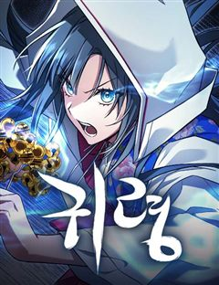
네이버웹툰귀령
배꽃향기 가득한 지리산 자락의 작은 암자 세암당. 남도 만신의 후예이자 천궁 선녀의 환생 하연은 금강저를 통해 영의 세계에 개입할 수 있는 청년, 건우를 만나 세상의 슬픔과 한을 풀고 악귀를 퇴치해 나간다.
오컬트공포동양풍판타지소설원작네이버웹툰에서 보기 → -
22
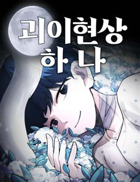
네이버웹툰괴이현상 하나
괴이현상 규칙 하나, ?̵̡͖̺̮͚̱͚̿͛̋͌̑͡?̢̨̲̤̞͙̟̌̏́̒̔̎̅͌͠͝?̴̰̭̭͉̬͙̲̄̀̐̿͐͋͛͡͠?̧͖͈̮̞̯̯̟̲̒̏̒͘͘͠을 잊지 마세요. 괴이현상 규칙 둘, 중심부 ?̭̠͙̖̹̪͎͗̒̒̋͒͠?̸̫͈̯͉̝̰͇́̒̀̏́͂͛͟͠을 찾으세요. 괴이현상 규칙 셋, ?͗̒̒…
공포괴담비쥬얼쇼크바디 호러2024 지상최대공모전네이버웹툰에서 보기 → -
23
 네이버웹툰
네이버웹툰사랑이 끝나면 네가 끝난다
귀신을 볼 수 있는 소녀. 그녀 앞에 나타난 과거의 인연을 쫓아온 귀신 ‘백적’은 사랑을 말하지만, 그 시선은 다른 누군가를 향한다. 사랑을 위한 사냥감이 되고, 나는 점점 ‘나’를 잃어간다. 애정과 집착 사이, 자아의 경계가 뒤틀리는 로맨스 스릴러.
오컬트판타지공포로맨스릴러2025 지상최대공모전동양풍로맨스네이버웹툰에서 보기 → -
24네이버웹툰
신이 되겠다
돈만 주면 무슨 일이든 해결해주는 무당 흥신소를 운영하는 이신, 그는 동생을 살리기 위해선 100억이 필요하다. 하지만 돈을 마련 할 방법이 도무지 떠오르지 않는데... "인상이 선해 보이세요" 자신을 길거리에서 포교하려 하는 도쟁이 지율을 보고 아이디어가 하나 떠오른다. 그건 바로.…
오컬트오컬트판타지사이비종교사이다자극적인네이버웹툰에서 보기 → -
25
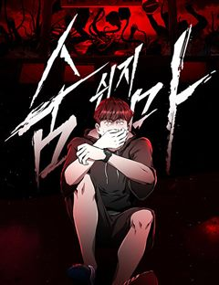
네이버웹툰숨쉬지마
불의의 사고로 꿈을 잃은 남자 주인공 수영은 여동생 희수와 함께 크루즈 여행을 떠난다. 하지만 그곳엔 알 수 없는 바이러스가 퍼지게 되고, 사람의 머리를 가져가는 괴물이 사람들을 공격한다. 그 과정에서 주인공은 여동생과 떨어지게 되는데, 도망칠 곳은 망망대해 바다밖에 없다. 수영은 과…
공포절망적인생존스릴러서스펜스네이버웹툰에서 보기 → -
26네이버웹툰
보이드맨
신들이 지배하는 포스트 아포칼립스. 가족을 앗아간 신을 죽이기 위해, 난 죽음으로 들어갔다. “공허여, 내게 힘을 빌려줘. 신을 죽일 수 있는 힘을...!”
사이비종교액션아포칼립스신화모험성장물네이버웹툰에서 보기 → -
27
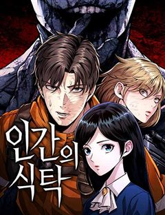
네이버웹툰인간의 식탁
망망대해에 홀로 떠 있는 해상원자력발전소 ‘레비아탄 호’. 안전점검을 위해 이곳을 방문한 윤호와 회사 동료들은 의문의 폭발사고와 함께 외부와의 통신이 끊긴 채 고립된다. 그러나 폭발은 시작에 불과했다. 원자로의 연기 속에서 정체불명의 거인이 나타나 생존자들을 습격해 잡아먹기 시작하고…
공포생존데스게임크리처인외존재네이버웹툰에서 보기 → -
28네이버웹툰
서울밤피어
시체 구덩이에서 눈을 뜨는 재이. 운명적으로 만난 반과 피의 계약을 맺고 밤피어의 신부가 된다. 재이는 잃어버린 기억 속 자신의 연인을 찾아 지켜내기 위해 반은 원수 제이콥을 찾기 위해 다른 목적의 두 사람이 운명의 한배를 타고 서울로 향한다.
뱀파이어시리어스액션인외존재복수극네이버웹툰에서 보기 → -
29
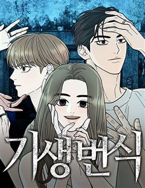
네이버웹툰기생번식
스릴러 대가 <꼬리잡기> 바쉬 작가 신작. 근원을 알 수 없는 기이한 현상을 겪게 된 세 사람. 덕분에 세 사람은 원하던 모든 것을 얻게 되지만… 처음엔 즐거움만 선사하던 그것이 점점 그들의 일상, 그들의 생사까지 지배하려 한다는 사실을 깨닫는다. '그것'의 목적은 무엇일까. 행운의…
오컬트판타지공포괴담바디 호러고자극스릴러네이버웹툰에서 보기 → -
30
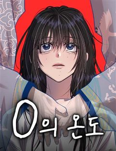
네이버웹툰0의 온도
고1때부터 자신을 따라다니던 영혼 '0'과 사랑에 빠진 민경희. 그녀는 성인이 되자마자 '0'과 영혼결혼식을 올리고, '0'이 머물 수 있는 '몸'을 만들어 주기로 약속한다. 그러나 만질 수 없는 것을 탐하게 된 대가가 따르는데...
오컬트오컬트판타지로맨스릴러2025 연재직행열차빙의네이버웹툰에서 보기 →